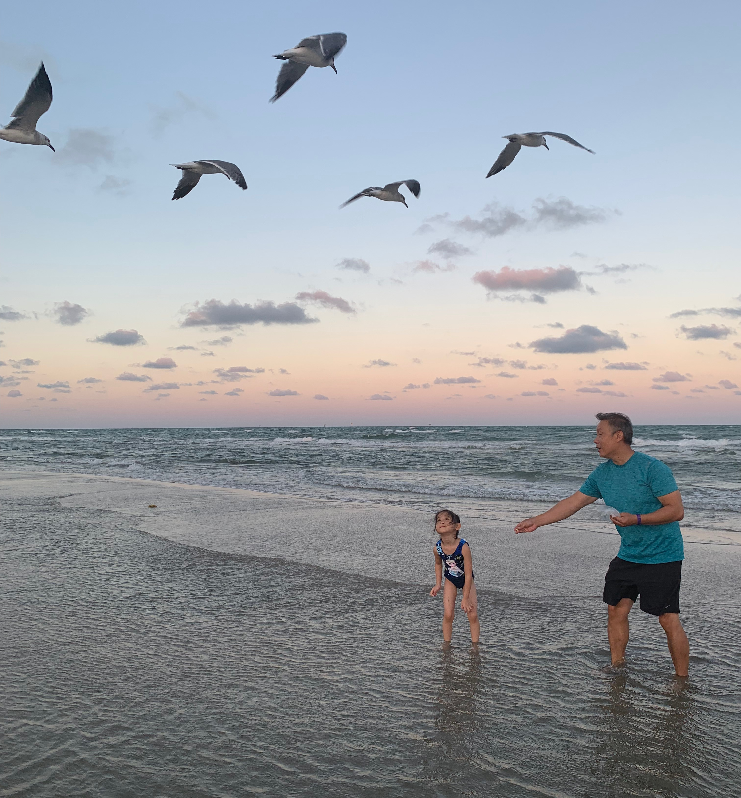
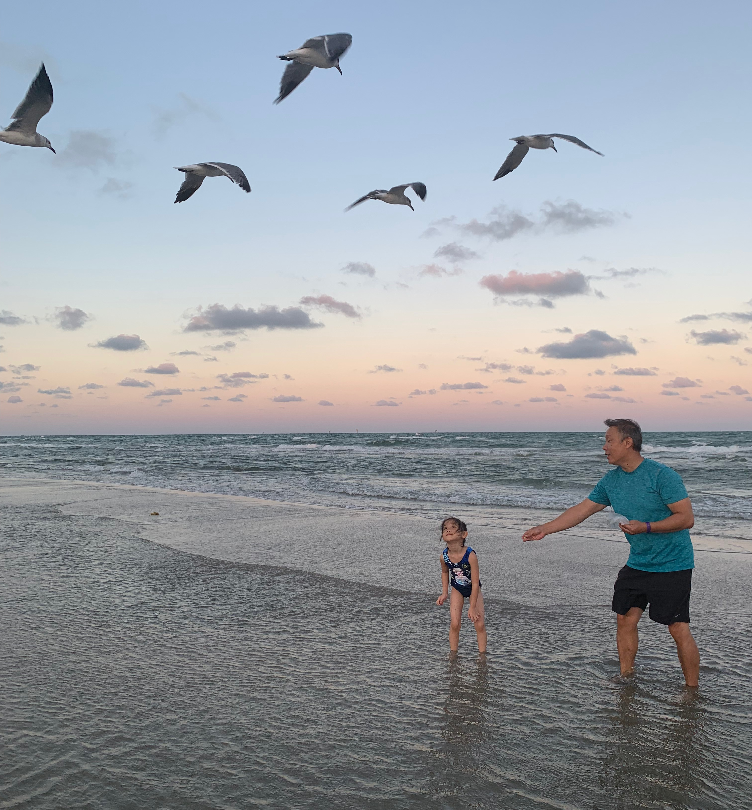
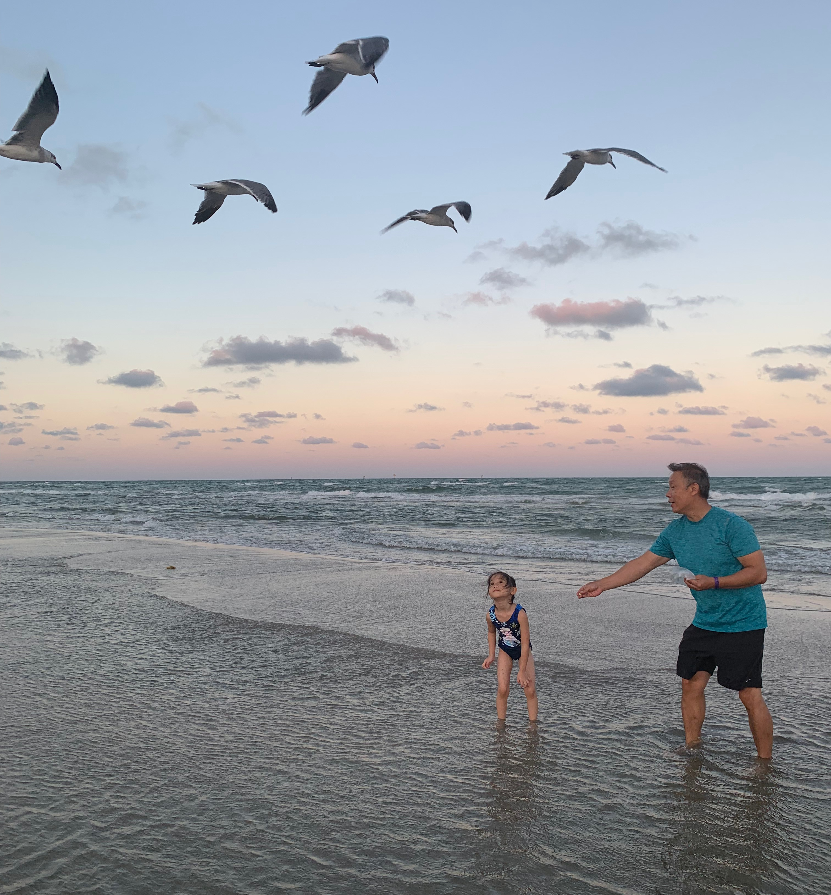

When people talk about America, they talk about its well-developed economy, diversity of races and culture, sensitive political issues or more. Once again, I thought I know too well about this country, no matter from news or from textbooks. But in fact, in 2016 after spending two months in this country, I realized my reckless conclusion. This year I revisited Texas. Now I can still remember the moment my five-year-old sister cried out "I don't want to leave!" at the airport. She said she will definitely miss the clear blue ocean and the extra large Krispy Kreme donuts in San Antonio, Texas, a place that helps me form the first recognition to America culture.
My initial impression to Texas is golden, since the sun light always selflessly touches every inch of land, shedding light on my heart that has been taken a toll by study and work. During the vacation My family and I lived in Jing's home. Jing used to be my father's workmate in China but then moved to San Antonio and open his own gymnastic gym with his wife, Wenjing. They are quite busy at weekdays, so we first explored the city ourselves. During our exploration, I felt the famous Texas hospitality and also something unfamiliar, just like I did in 2016: The strong smell of laundry detergent in the air, the English conversations that went faster than I expected and the strange flavors of Lays that have never showed up in my country, etc. There is neither skyscrapers to block the view of sky nor subways that run through business districts. Then, naturally, as a tourist, my initial impression to this country is that it has fresh air and good weather, and you can go nowhere without a car. At least until now, my experiences tell me that my assumption still holds.
Then It was almost weekend. Jing and his family decided to take us to the beach where we can go fishing. When we got to the Mustang Island Beach, it was sunset already. We all got out of our car. As the line where the sky met the sea gradually turned purple, flocks of seagulls fly away from my vision. Some people were doing BBQ on the other side of the beach, chatting and laughing. Jing was reading a book in front of his car, with his feet dipped into the water. I heard the breeze singing melody to me, right beside my ears. I have never felt so free before, as if anything else is subtle in front of the calling of nature. We walked along the shoreline while the sun was climbing down to the sea. Then it was time for us to "call the nature"—we went fishing on a cliff. I could occasionally see something silver jumping through the spindrift while Jing and my father was setting up the equipment. We then waited until the fish to bite. During the peaceful time, Wenjing invited us to do handstand on the shoreline. Our funny action caught other people's attention. They wanted to learn from Wenjing as well. Wenjing is a perfect coach for handstand and those people were talented in gymnastic as well. We took a lot of photos together and then are invited to join their BBQ. I felt the interpersonal enthusiasm flowing in American people’s veins. It will, to some extent, drive some of my nostalgia away. A few hours later, as the sun finally disappeared from the distant skyline, Jing and my father got some speckled trouts. It is true that everything is bigger in Texas, even those trouts. But Jing said that most American people do not eat trouts because their fishbones are spiny. But if you steam those trouts and season them with soy sauce and gingers, it become the one of the most famous dishes in Guangdong, China.
Our final destination was Alamo, a bloody battlefield and a primitive Spanish mission which also delighted us with its historic beauty. The smell of age and history on the wall reminded me that the city has no shortage of culture: it used to be a genuine cultural crossroads, a place where Spanish and American culture met and thrived together during the melting-pot era. From here, the development of a multilingual state sew seeds for a multicultural nation, and then diversity became the symbol of America. It is the mix of culture that lays the foundation of development in education, technology, economy and politics. And the Alamo, the place of honor and legend, ought to be remembered and treasured.
It was time to say goodbye to San Antonio and go back to high school. But Texas always plays an important role in my heart even until now. It is my first home outside of my country. San Antonio, an old city full of country melody and cowboys and a place where I can call home when I feel homesick, has carried too much memory of me and my family and also helped me comprehend the charm of American and Mexican culture. The experience I have in Texas is a transition to my college life, and it helped me adapt to culture shock in advance. And then, once I have discovered the fun of America, I know I am not alone.
